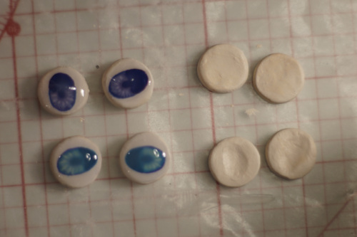
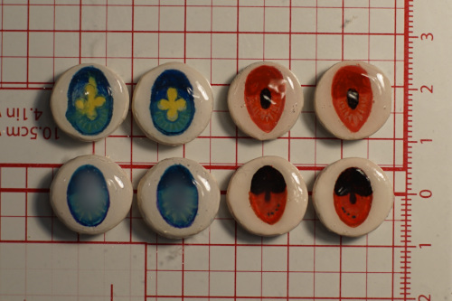
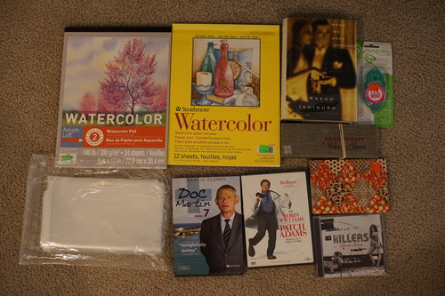
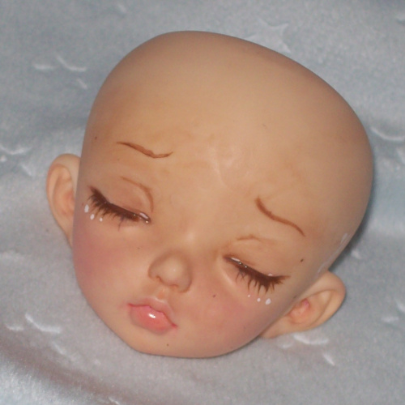

I'm 99% sure Kikikiki is real after holding her in real life and comparing her stringing peculiarities with pompon's KJ Jill. I don't think anyone is going to care enough to exactly copy some uncommon choices that KJ makes. I did ask the DoA mods to verify as well as KJ last Thursday. The mods seem to have left me on read. I'm going to believe they all attended Resin Rose and had too much fun and forgot about me.
I did hear back from Kinoko Juice almost immediately. Kame emailed back and said she's "pretty sure" kikikiki is real, but it's strange she has no eyes. I agree! Kiki looks so strange without kinoko eye! She doesn't look right at all. I don't know how her previous owner managed to lose them.
Kame's email to me makes me want to buy one of each of their dolls. I feel a little guilty about not being able to support them directly. KJ does make wonderful dolls!
I have made some attempts at eye chips in the last few days. The bases are Crayola air dry clay. Most are flat circles but 2 pairs were indented where the iris should be. The lens is Aleene's Jewelry Glaze. I chose it because it was on clearance a few months ago. I hope I don't fall in love with it because it seems to be discontinued!
The glaze is hazy while wet and dries to transparent. It has some problems with bubbles (as expected, really) and does dry with dimension. The dimension will lessen as it dries, but you can add more layers for more roundness. I have high hopes for the blue pair once they're fully dry. My favorite is the blue/yellow, but I really destroyed one of them.
I was able to push the bubbles to the side and off the shown part of the eye in most cases. I made some fatal mistakes on some. You know, the keep trying to fix it and making it worse mistakes! I got lumps in the lens for some and freaked out. I tried squishing the almost dry front against my glass plate and it flattened the lump, but the gouache paint moved around underneath! I think it would have been best to wait for it to dry fully, then put another coat on and hope for a more even application. Or even sand it down!
I did find that the glaze on the back of the eye was peeled off by the eye putty. I'll be trying polymer clay next which shouldn't have those issues.

I attempted a faceup on kikikiki using MSC! It was going really well until... i wiped away a sealed layer with only water. I'm not sure what's wrong with my MSC but i switched to testors after rinsing off all the paint ;a; I'm not entirely sure if I was using it wrong or what, but I did learn the gouache I'm using now did not stain her unsealed head.

I'm not sure I got the determined eyebrows in the second try. She still looks spunky but not exactly how I wanted. You can really see the lumpiness in the right eye in this photo.
Kiki is actually really easy to paint because of sculpted guidelines. She has sculpted eyebrows (that I ignored) that should make it very easy to place them as well as guidelines around her eyes.
PS I took photos of Kiki's blank face at many angles if anyone needs it for a faceup mockup.
PPS it is sacrilege to sand off kiki's sculpted eyelashes

I replaced her awful pleather neck disc with a real leather neck disc. She has trouble holding neck poses without one.
I've decided to name her Praline. I'm giving her a DQN name to match her cute goofiness. My mom says I need a doll named Cream now so stay tuned for that (eventually). A hoekuchi would be welcome in my home!
I finally found some watercolor paper! I've been looking for months! It was hidden in the kid's books for some reason.
only 9 sheets remain.
Ryan already had this, but this copy looks unread and has a mylar cover.
my mom has informed me this is not a good deal.
They don't look like they've ever been used. MSRP: $3.95
My mom likes this show. I didn't tell her about the mass donation of british PBS shows for her own safety (or mine).
Ryan says we watched this together in my dorm room. I don't remember. It's for him!
the price tag ripped the paper outer when I was removing it ;__________; I'm going to keep my small paintings in it
omake: my first faceup from April 1, 2010
